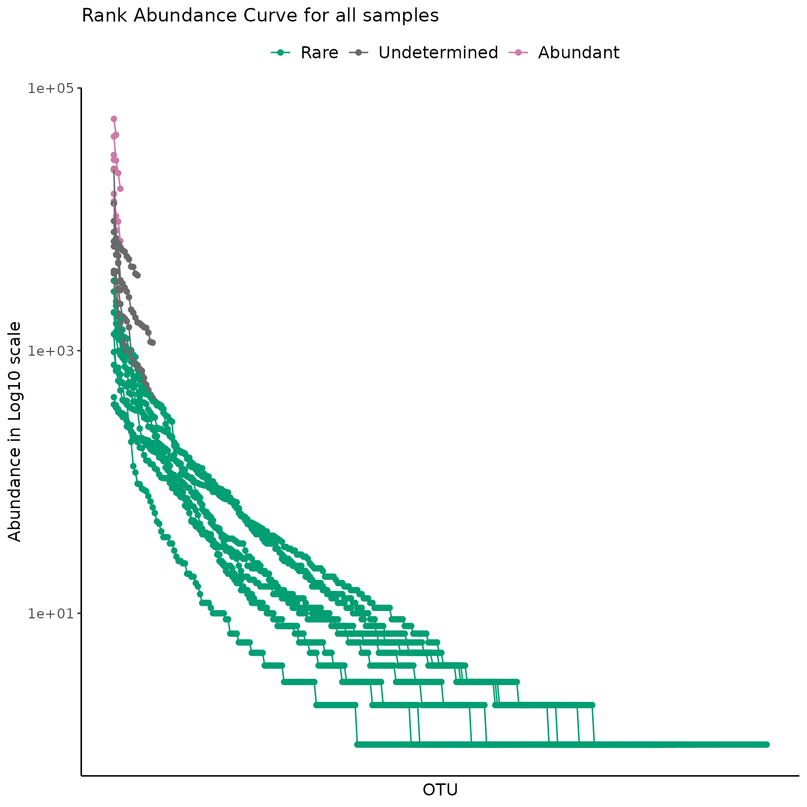
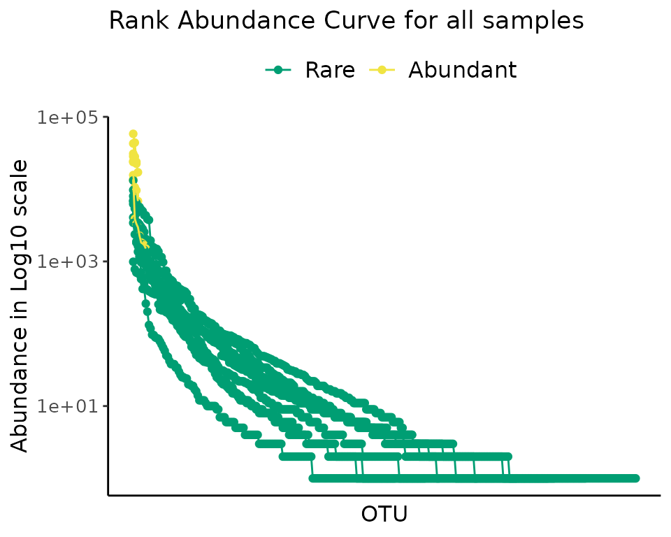
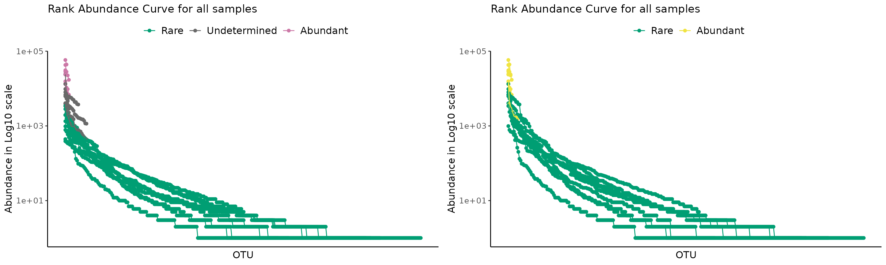
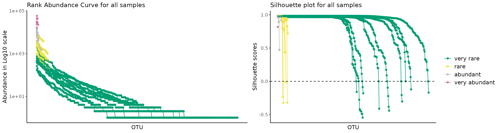
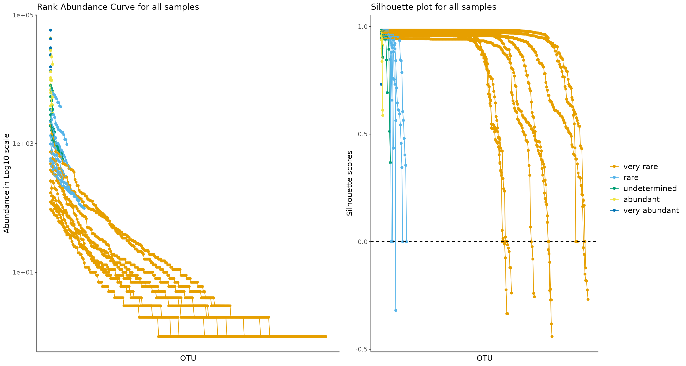
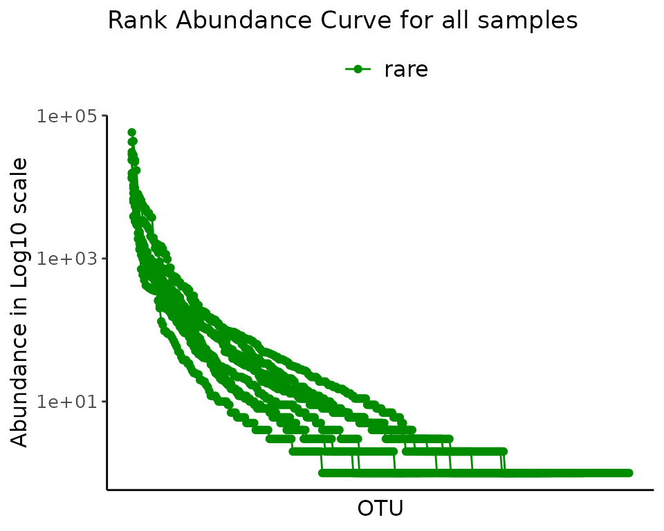
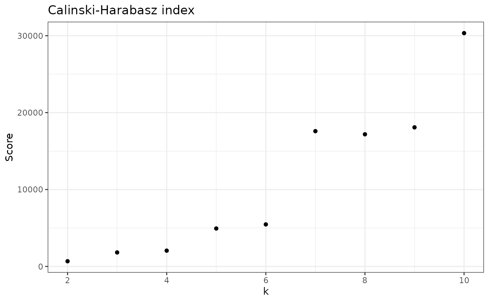
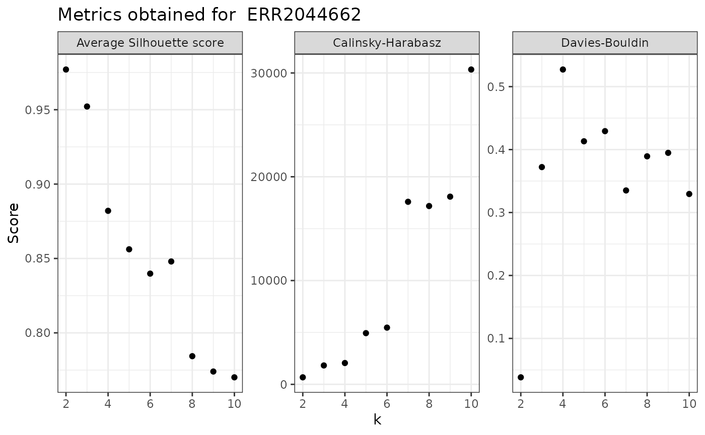

Alternative classifications with ulrb
Source:vignettes/explore-classifications.Rmd
explore-classifications.Rmd
library(ulrb)
library(cluster)
library(dplyr)
#>
#> Attaching package: 'dplyr'
#> The following objects are masked from 'package:stats':
#>
#> filter, lag
#> The following objects are masked from 'package:base':
#>
#> intersect, setdiff, setequal, union
library(ggplot2)
library(tidyr)
# a vector with some colors
qualitative_colors <- c("#E69F00", "#56B4E9", "#009E73", "#F0E442", "#0072B2", "#D55E00", "#CC79A7")Explore alternative classifications
By default, we have been considering that the microbial communities are divided into “rare”, “undetermined” and “abundant”. This division implies that the partition around medoids algorithm is considering k=3, i.e. there are three clusters. However, there are at least three situations where you might want to change the number of clusters:
- The clusters obtained are non-sense;
- The biological/ecological questions requires another division;
- You want a fully automated classification.
There might be other situations, of course. The bottom line is that, depending on the context of your specific research and data, you might just want a different number of classifications. We propose 3 and we think that 3 different classifications work well for most situations, but this is not set in stone.
In this tutorial we will show how define_rb() can be
used for different classifications and we will also try and go a little
bit deeper on whats behind the actual function.
Index
Classical example;
Apply 2 classifications: Rare vs Abundant;
Apply more complicated classification, k>3;
Why k = 1 is non-sense;
What is the maximum number of k and why?;
Approaches to evaluate k;
Set k automatically.
Classical example
The classical example will simply use the default arguments with the
function define_rb().
Prepare data
Just like in the tutorial vignette("ulrb-vignet"), we
have to import, clean and tidy the dataset before using the
define_rb() function.
# Load raw OTU table from N-ICE
load("../data/nice_raw.rda")
# Change name of first column
nice_clean <- rename(nice_raw, Taxonomy = "X.SampleID")
# Select 16S rRNA amplicon sequencing samples
selected_samples <- c("ERR2044662", "ERR2044663", "ERR2044664",
"ERR2044665", "ERR2044666", "ERR2044667",
"ERR2044668", "ERR2044669", "ERR2044670")
# Add a column with phylogenetic units ID (OTU in this case)
nice_clean <- mutate(nice_clean, OTU = paste0("OTU_", row_number()))
# Select relevant collumns
nice_clean <- select(nice_clean, selected_samples, OTU, Taxonomy)
#> Warning: Using an external vector in selections was deprecated in tidyselect 1.1.0.
#> ℹ Please use `all_of()` or `any_of()` instead.
#> # Was:
#> data %>% select(selected_samples)
#>
#> # Now:
#> data %>% select(all_of(selected_samples))
#>
#> See <https://tidyselect.r-lib.org/reference/faq-external-vector.html>.
#> This warning is displayed once every 8 hours.
#> Call `lifecycle::last_lifecycle_warnings()` to see where this warning was
#> generated.
# Separate Taxonomy column into each taxonomic level
nice_clean <- separate(nice_clean,
Taxonomy,
c("Domain","Kingdom","Phylum",
"Class","Order","Family",
"Genus","Species"),
sep=";")
#> Warning: Expected 8 pieces. Missing pieces filled with `NA` in 912 rows [1, 2, 4, 5, 6,
#> 7, 8, 9, 10, 11, 12, 13, 14, 15, 16, 17, 18, 19, 20, 21, ...].
# Remove Kingdom column, because it is not used for prokaryotes
nice_clean <- select(nice_clean, -Kingdom)
# Remove eukaryotes
nice_clean <- filter(nice_clean, Domain != "sk__Eukaryota")
# Remove unclassified OTUs at phylum level
nice_clean <- filter(nice_clean, !is.na(Phylum))
# Simplify name
nice <- nice_clean
# Tidy data
nice_tidy <- prepare_tidy_data(nice,
sample_names = selected_samples,
samples_in = "cols")Default is k = 3
The default settings can be interpreted as the division between “rare”, “undetermined” and “abundant” species.
rb_default <- define_rb(nice_tidy)
#> Joining with `by = join_by(Sample, Level)`We can see the meaning of this division with the standard Rank Abundance Curve (RAC).
Let’s start with a single sample:
plot_ulrb_clustering(rb_default,
sample_id = "ERR2044662",
taxa_col = "OTU",
log_scaled = TRUE)To look at all samples at once, we use a centrality metric. Note that for a low number of samples you can chose to use a grid, or plot all samples; but this wont work for a high number of samples. With a centrality metric, however, we are able to see any number of samples in a single plot.
plot_ulrb_clustering(rb_default,
taxa_col = "OTU",
log_scaled = TRUE,
plot_all = TRUE)
#> Warning: Removed 197 rows containing missing values (`geom_segment()`).
Apply 2 classifications: Rare vs Abundant
We can do exactly the same thing we did before, but with only “rare”
and “abundant” classifications, to do that we set k = 2. Note that we do
not explicitly set k = 2 in the define_rb() function,
instead, we specify our classification vector.
The classification vector can be anything, but in the context of k =
2, our meaning is that we have “rare” and “abundant” species; but you
could call them “class1” and “class2”, or whatever you want. Behind the
scenes, the function define_rb() will calculate the size of
your classification vector and from there estimate k. So, if you have a
classification vector with “rare” and “abundant”, it will have length 2,
so k = 2; Likewise, the default parameter is set to
classification_vector = c(“Rare”, “Undetermined”, “Abundant”), so length
= 3 and k = 3.
To apply this new classification scheme we change the
classification_vector argument:
rb_k2 <- define_rb(nice_tidy, classification_vector = c("Rare", "Abundant"))
#> Joining with `by = join_by(Sample, Level)`And then we can see the clustering result just like before.
plot_ulrb_clustering(rb_k2,
taxa_col = "OTU",
plot_all = TRUE,
log_scaled = TRUE,
colors = c("#009E73", "#F0E442"))
#> Warning: Removed 177 rows containing missing values (`geom_segment()`).
And we can compare the two options directly:
gridExtra::grid.arrange(
plot_ulrb_clustering(rb_default,
taxa_col = "OTU",
log_scaled = TRUE,
plot_all = TRUE),
plot_ulrb_clustering(rb_k2,
taxa_col = "OTU",
plot_all = TRUE,
log_scaled = TRUE,
colors = c("#009E73", "#F0E442")),
nrow = 1
)
#> Warning: Removed 197 rows containing missing values (`geom_segment()`).
#> Warning: Removed 177 rows containing missing values (`geom_segment()`).
We do not recommend using k = 2, because it implies that there is a hard distinction between rare and abundant taxa. We consider that there should always be an intermediate or undetermined group, otherwise, we will always have phylogenetic units with very similar abundance scores, but opposing classifications, which is misleading. For more details on this reasoning, see Pascoal et al., 2023 (manuscript in preparation).
Apply more complicated classification, k>3
Lets suppose that we want to distinguish our microbial community into the following groups:
(e.g. A) 1) very rare; 2) rare; 3) abundant; 4) very abundant.
Or:
(e.g. B) 1) very rare; 2) rare; 4) undetermined; 5) abundant; 6) very abundant.
Or even more…
Hopefully, you get the idea, the point is that we just have to change the classification vector.
Lets see how we would do e.g. A. First we select a new classification vector, which will have 4 different classifications, thus (implicitly) k = 4.
#
rb_k4 <- define_rb(nice_tidy,
classification_vector = c("very rare", "rare", "abundant", "very abundant"))
#> Joining with `by = join_by(Sample, Level)`
#
# One sample as example
plot_ulrb(rb_k4,
sample_id = "ERR2044662",
taxa_col = "OTU",
colors = c("#009E73", "#F0E442", "grey","#CC79A7"),
log_scaled = TRUE)
# all samples
plot_ulrb(rb_k4,
taxa_col = "OTU",
colors = c("#009E73", "#F0E442", "grey","#CC79A7"),
log_scaled = TRUE,
plot_all = TRUE)
#> Warning: Removed 208 rows containing missing values (`geom_segment()`).
#> Removed 208 rows containing missing values (`geom_segment()`).Note that this is a very acceptable interpretation of the data!
Hopefully you already have the intuition to change classifications as you wish. Let’s do the e.g. B, which has k = 5, because it includes 5 different classifications.
#
rb_k5 <- define_rb(nice_tidy,
classification_vector = c("very rare", "rare", "undetermined", "abundant", "very abundant"))
#> Joining with `by = join_by(Sample, Level)`
# One sample as example
plot_ulrb(rb_k5,
sample_id = "ERR2044662",
taxa_col = "OTU",
colors = qualitative_colors[1:5],
log_scaled = TRUE)
# All samples
plot_ulrb(rb_k5,
taxa_col = "OTU",
colors = qualitative_colors[1:5],
log_scaled = TRUE,
plot_all = TRUE)
#> Warning: Removed 213 rows containing missing values (`geom_segment()`).
#> Removed 213 rows containing missing values (`geom_segment()`).
Why k = 1 is non-sense
Some values of k are (mathematically) possible, but non-sense. Consider, for example, k = 1. In this situation, it is perfectly possible from a mathematical point of view, i.e you simply cluster all observations into a single classification. However, this is meaningless and gives no extra information on your community. Additionally, from the point of view of the rare biosphere, it is important to keep in mind that one phylogenetic unit can only be considered “rare” relatively to the other phylogenetic units within the same community. Thus, in this context, k = 1 is self-contradictory. Despite this, do keep in mind that we are making the assumption that there is such thing as a “rare biosphere”. This naive assumption caries another assumption within itself, which is that phylogenetic units have sufficiently different abundance relative to one another to form distinct clusters. In fact, I don’t think anyone as found an environmental microbial community constituted of phylogenetic units with the exactly (or approximately) same abundance score. If that was the case, then we could not say that a species was neither rare or abundant, because any classification would be self-contradictory.
We can do the same thing as before, setting the classification vector to just “rare” and you’ll see how it is possible, but meaningless.
#
rb_k1 <- define_rb(nice_tidy, classification_vector = c("rare"))
#> Joining with `by = join_by(Sample, Level)`
plot_ulrb_clustering(rb_k1,
taxa_col = "OTU",
colors = "green4",
plot_all = TRUE,
log_scaled = TRUE)
#> Warning: Removed 168 rows containing missing values (`geom_segment()`). ## What is the maximum value of k and why?
What about the maximum value of k? This is set by the limitations inherent to algorithm itself, which in this case is partition around medoids (k-medoids). The maximum number of groups on which we divide observations must be less than the total observations. Meaning that at the maximum limit, each possible observation is its own group. This means that it could be possible to have a maximum value of k equal to the number of different phylogenetic units, i.e. each phylogenetic unit has its own classification. However, if you try to do that, you will get an error. This is because several phylogenetic units have exactly the same abundance, specially in the rare biosphere. Thus, those phylogenetic units can never belong to different classifications (if we are separating phylogenetic units by their abundance, then phylogenetic units with the same abundance must belong to the same group). This means that the maximum value of k will be equal to number of different abundance scores, which will be lower than the number of total observations.
If you have several samples, then the maximum value of k will differ for each sample (even if you apply normalization). If you would apply the same maximum k for all samples at once, then you would have to calculate the maximum k of all samples, and then select the minimum of those, which will be the one working for all.
Just like with k = 1, the maximum value of k is meaningless. Even if you do it, which you mathematically can, it will not give you any additional information.
Lets illustrate the maximum k of one sample:
rb_sample1 <- nice_tidy %>% filter(Sample == "ERR2044662")
# Calculate maximum k
max_k_sample1 <- rb_sample1 %>% pull(Abundance) %>% unique() %>% length()
#
max_k_sample1
#> [1] 71
# Improvise a classification vector for maximum k
# that is just any vector with the same length
classification_vector_max_k_sample1 <- seq_along(1:max_k_sample1)
#
rb_sample1_max_k <-
define_rb(rb_sample1,
classification_vector = classification_vector_max_k_sample1)
#> Joining with `by = join_by(Sample, Level)`
#> Warning in define_rb(rb_sample1, classification_vector =
#> classification_vector_max_k_sample1): 25 samples got a bad Silhouette score.
#> Consider changing the number of classifications.
#> If half the observations within a classification are below 0.5 Silhouette score, we consider that the clustering was 'Bad'.
#> Check 'Evaluation' collumn for more details.
#
rb_sample1_max_k %>% select(OTU, Classification, Abundance) %>% head(10)
#> Adding missing grouping variables: `Sample`
#> # A tibble: 10 × 4
#> # Groups: Sample, Classification [3]
#> Sample OTU Classification Abundance
#> <chr> <chr> <fct> <int>
#> 1 ERR2044662 OTU_2 44 165
#> 2 ERR2044662 OTU_5 58 541
#> 3 ERR2044662 OTU_6 8 8
#> 4 ERR2044662 OTU_29 8 8
#> 5 ERR2044662 OTU_30 8 8
#> 6 ERR2044662 OTU_244 8 8
#> 7 ERR2044662 OTU_260 8 8
#> 8 ERR2044662 OTU_313 8 8
#> 9 ERR2044662 OTU_329 8 8
#> 10 ERR2044662 OTU_380 8 8I’m not going to plot this figure, because I would need 71 different colors! There really is no point, this was just to show you that it is possible. With some data wrangling you could easily do the same for all samples, or any number of samples. But this is really not something that you should ever do in the context of rare biosphere studies.
Approaches to evaluate k
What if we want to compare all possible values of k? Or, if not all of them, just a few candidates?
To compare values of k, there are a few useful metrics that are implemented in ulrb package:
- Average Silhouette score (cluster density);
- Davies-Bouldin index (cluster separation);
- And Calinsky-Harabasz index (cluster definition).
Each of these metrics evaluates different aspects of one clustering result; thus, we can calculate them for the clustering obtained by each value of k. By comparing the values obtained for each k, you can select the k that got the best score. To do this, consider the following:
- Average Silhouette Score: Select maximum value for best k;
- Davies-Bouldin index: Select minimum value for best
k;
- Calinsky-Harabasz index: Select maximum value for best k.
The most straight forward way to evaluate a reasonable range of k’s
is by using the function suggest_k(). This function
includes an argument for detailed results, which will give you the
results for the three indices, between k = 3 and k = 10. We don’t
recommend testing k’s outside of this range for the purpose of defining
the rare biosphere, but you can analyze all possible k’s (just change
the range argument).
suggest_k(nice_tidy, detailed = TRUE)
#> [[1]]
#> [1] "This list contains several details that might help you decide a k parameter."
#>
#> [[2]]
#> Score Criteria Details
#> 1 Davies-Bouldin index Minimum value for best k Measures cluster separation
#> 2 Calinsky-Harabasz index Maximum value for best k Measures cluster definition
#> 3 Average Silhouette Score Maximum value for best k Measures cluster density
#>
#> $SamplesSummary
#> [1] "You study has 9 samples. For each one we calculated all indices obtained for each k, from 3 to 10"
#>
#> $DaviesBouldin
#> # A tibble: 9 × 3
#> Sample CH k
#> <chr> <dbl> <int>
#> 1 ERR2044662 30332. 10
#> 2 ERR2044663 42150. 10
#> 3 ERR2044664 296091. 10
#> 4 ERR2044665 31908. 10
#> 5 ERR2044666 88804. 10
#> 6 ERR2044667 17792. 10
#> 7 ERR2044669 35405. 10
#> 8 ERR2044668 75615. 10
#> 9 ERR2044670 18276. 9
#>
#> $CalinskyHarabasz
#> # A tibble: 9 × 3
#> Sample CH k
#> <chr> <dbl> <int>
#> 1 ERR2044662 30332. 10
#> 2 ERR2044663 42150. 10
#> 3 ERR2044664 296091. 10
#> 4 ERR2044665 31908. 10
#> 5 ERR2044666 88804. 10
#> 6 ERR2044667 17792. 10
#> 7 ERR2044669 35405. 10
#> 8 ERR2044668 75615. 10
#> 9 ERR2044670 18276. 9
#>
#> $averageSilhouette
#> # A tibble: 9 × 3
#> Sample average_Silhouette k
#> <chr> <dbl> <int>
#> 1 ERR2044662 0.952 3
#> 2 ERR2044663 0.955 3
#> 3 ERR2044664 0.970 3
#> 4 ERR2044665 0.915 3
#> 5 ERR2044666 0.965 3
#> 6 ERR2044667 0.874 3
#> 7 ERR2044669 0.913 5
#> 8 ERR2044668 0.951 4
#> 9 ERR2044670 0.932 3For another group of k’s, range = 10:20
suggest_k(nice_tidy, detailed = TRUE, range = 10:20)
#> [[1]]
#> [1] "This list contains several details that might help you decide a k parameter."
#>
#> [[2]]
#> Score Criteria Details
#> 1 Davies-Bouldin index Minimum value for best k Measures cluster separation
#> 2 Calinsky-Harabasz index Maximum value for best k Measures cluster definition
#> 3 Average Silhouette Score Maximum value for best k Measures cluster density
#>
#> $SamplesSummary
#> [1] "You study has 9 samples. For each one we calculated all indices obtained for each k, from 10 to 20"
#>
#> $DaviesBouldin
#> # A tibble: 9 × 3
#> Sample CH k
#> <chr> <dbl> <int>
#> 1 ERR2044662 234158. 20
#> 2 ERR2044663 302032. 20
#> 3 ERR2044664 2004343. 20
#> 4 ERR2044665 230118. 20
#> 5 ERR2044666 316479. 20
#> 6 ERR2044667 190069. 20
#> 7 ERR2044669 183647. 19
#> 8 ERR2044668 418496. 18
#> 9 ERR2044670 212691. 19
#>
#> $CalinskyHarabasz
#> # A tibble: 9 × 3
#> Sample CH k
#> <chr> <dbl> <int>
#> 1 ERR2044662 234158. 20
#> 2 ERR2044663 302032. 20
#> 3 ERR2044664 2004343. 20
#> 4 ERR2044665 230118. 20
#> 5 ERR2044666 316479. 20
#> 6 ERR2044667 190069. 20
#> 7 ERR2044669 183647. 19
#> 8 ERR2044668 418496. 18
#> 9 ERR2044670 212691. 19
#>
#> $averageSilhouette
#> # A tibble: 9 × 3
#> Sample average_Silhouette k
#> <chr> <dbl> <int>
#> 1 ERR2044662 0.770 10
#> 2 ERR2044663 0.800 12
#> 3 ERR2044664 0.773 10
#> 4 ERR2044665 0.789 11
#> 5 ERR2044666 0.781 10
#> 6 ERR2044667 0.791 11
#> 7 ERR2044669 0.748 12
#> 8 ERR2044668 0.799 13
#> 9 ERR2044670 0.747 14Fine grained analysis
You can look at particular metrics and at specific samples. To do so, we made several helper functions:
-
check_avgSil()to calculate average silhouette score; -
check_DB()to calculate Davies-Bouldin index; -
check_CH()to calculate Calinsky-Harabasz index.
You can also calculate them at the same time for one sample with
evaluate_sample_k() or all samples with
evaluate_k().
Let’s look at several examples, using the default range of k = 3 up to k = 10:
## One sample
# To get values
check_avgSil(nice_tidy, sample_id = selected_samples[1])
#> [1] 0.9521452 0.8820316 0.8561774 0.8398216 0.8479872 0.7843358 0.7740169
#> [8] 0.7701163
# To plot results
check_avgSil(nice_tidy, sample_id = selected_samples[1], with_plot = TRUE)In the last plot, each value of k represents a clustering result. From the above information, we would select k = 3 (just like the default option), because it had the highest average Silhouette score.
We can repeat for all other indices:
## Davie-Boulding index
# To get values
check_DB(nice_tidy, sample_id = selected_samples[1])
#> [1] 0.3721866 0.5271704 0.4131651 0.4292696 0.3350836 0.3892966 0.3948026
#> [8] 0.3294451
# To plot results
check_DB(nice_tidy, sample_id = selected_samples[1], with_plot = TRUE)
## Calinsky-Harabasz index
# To get values
check_CH(nice_tidy, sample_id = selected_samples[1])
#> [1] 1821.426 2054.887 4933.956 5465.134 17589.032 17179.809 18083.313
#> [8] 30332.345
# To plot results
check_CH(nice_tidy, sample_id = selected_samples[1], with_plot = TRUE)
Note that the best k changed depending on the metric selected.
Thus, for sample 1 (ERR2044662), the best k would be: - 3 based on average Silhouette scores; - 4 based on Davies-Bouldin index; - 10 based on Calinsky-Harabasz index.
We can see how they compare directly with
evaluate_sample_k():
evaluate_sample_k(nice_tidy, sample_id = selected_samples[1], with_plot = TRUE)
The ulrb method assumes that samples are independent from each other,
which means that the above results for one sample, will be different for
the other samples. Thus, we should look at all samples at the same time,
with centrality metrics. To do so, we can use the function
evaluate_k():
## To get values
evaluate_k(nice_tidy)
#> # A tibble: 72 × 6
#> # Groups: Sample [9]
#> Sample data DB CH average_Silhouette k
#> <chr> <list> <dbl> <dbl> <dbl> <int>
#> 1 ERR2044662 <tibble [187 × 10]> 0.372 1821. 0.952 3
#> 2 ERR2044662 <tibble [187 × 10]> 0.527 2055. 0.882 4
#> 3 ERR2044662 <tibble [187 × 10]> 0.413 4934. 0.856 5
#> 4 ERR2044662 <tibble [187 × 10]> 0.429 5465. 0.840 6
#> 5 ERR2044662 <tibble [187 × 10]> 0.335 17589. 0.848 7
#> 6 ERR2044662 <tibble [187 × 10]> 0.389 17180. 0.784 8
#> 7 ERR2044662 <tibble [187 × 10]> 0.395 18083. 0.774 9
#> 8 ERR2044662 <tibble [187 × 10]> 0.329 30332. 0.770 10
#> 9 ERR2044663 <tibble [220 × 10]> 0.391 1491. 0.955 3
#> 10 ERR2044663 <tibble [220 × 10]> 0.516 1495. 0.891 4
#> # ℹ 62 more rows
## To plot
evaluate_k(nice_tidy, with_plot = TRUE)
#> No summary function supplied, defaulting to `mean_se()`
#> No summary function supplied, defaulting to `mean_se()`
#> No summary function supplied, defaulting to `mean_se()`Automatic k selection
We can decide what k to use based on any of this metrics, being aware
that they measure different aspects of the clustering results. The
function suggest_k(), by default, will:
- calculate the best k, based on the average Silhouette score, for each sample;
- calculate the average best k across all samples;
- return best k as an integer.
Thus, the default output of suggest_k() is a single
integer; this is used in the define_rb() function for the
automatic k decision.
Instead of the average Silhouette score, you can select another index
(Davies-Bouldin or Calinsky-Harabasz), and the function
suggest_k() will return the best k based on that index.
Let’s see some examples:
Everything automatic
Finally, if we have the ability to automatically suggest the value of
k, we can do the same in the context of the definition of rarity. To so
do, you can use the default parameters in define_rb(), but
with the automatic argument set to TRUE.
Like so,
automatic_classification <- define_rb(nice_tidy, automatic = TRUE)
#> Automatic option set to TRUE, so classification vector was overwritten
#> K= 3 based on Average Silhouette Score.
#> Joining with `by = join_by(Sample, Level)`
# Plot automatic result
plot_ulrb(automatic_classification, taxa_col = "OTU", plot_all = TRUE)
#> Warning: Removed 197 rows containing missing values (`geom_segment()`).
#> Removed 197 rows containing missing values (`geom_segment()`).Naturally, you can decide more parameters for the automatic selection of k, for example, lets suppose that you want to have groups of phylogenetic units that are very well defined, but you also want to have, at least, four classifications, but no more than 6.
For those two conditions, you would have to specify the range of k values (4:6) and the evaluation index should be the Calinsky-Harabasz index:
more_complex_automatic_classification <- define_rb(nice_tidy,
automatic = TRUE,
index = "Calinsky-Harabasz",
range = 4:6)
#> Automatic option set to TRUE, so classification vector was overwritten
#> K= 5 based on Calinsky-Harabasz.
#> Joining with `by = join_by(Sample, Level)`Note that the function informed you that the automatic k selected was 5. Thus, you know you will need 5 colors for the standard ulrb plots:
# Plot automatic result
plot_ulrb(more_complex_automatic_classification,
plot_all = TRUE,
taxa_col = "OTU",
colors = qualitative_colors[1:5],
log_scaled = TRUE)
#> Warning: Removed 213 rows containing missing values (`geom_segment()`).
#> Removed 213 rows containing missing values (`geom_segment()`).
In this example, the automatic option did not seem to give a better result than the default k = 3.
How each index behaves across all possible values of k?
This last section is for completion sake and should not be necessary in a study of the rare biosphere; however, it might prove useful for those interested in the details of this unsupervised learning approach.
# Start by deciding the maximum range across the entire dataset
max_k <- nice_tidy %>%
filter(Abundance > 0, !is.na(Abundance)) %>%
group_by(Sample) %>%
summarise(topK = length(unique(Abundance))) %>%
ungroup() %>%
pull(topK) %>%
min()
# print maximum number of clusters allowed for all samples in the N-ICE dataset
max_k
#> [1] 55If we have the maximum k, we just need to use the
evaluate_k() function for the full range of values. (if you
try to run this code, it might take a while)
evaluate_k(nice_tidy, with_plot = TRUE, range = 2:max_k)
#> Warning: Removed 1 rows containing non-finite values (`stat_summary()`).
#> No summary function supplied, defaulting to `mean_se()`
#> No summary function supplied, defaulting to `mean_se()`
#> No summary function supplied, defaulting to `mean_se()`